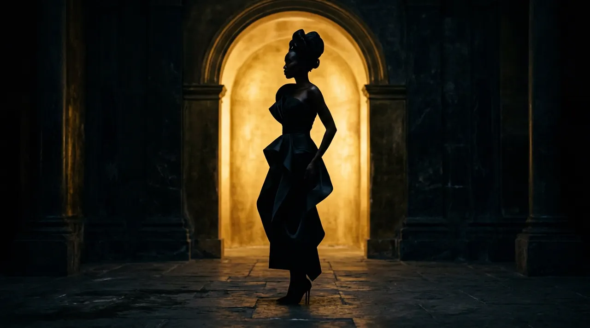

404
THE STYLE YOU'RE LOOKING FOR DOESN'T EXIST HERE.
The requested look or page has been moved, archived, or is temporarily out of season.
The requested look or page has been moved, archived, or is temporarily out of season.
